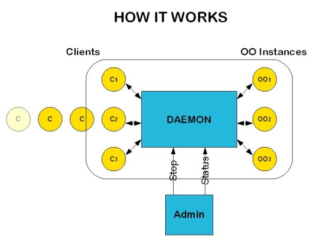

The Open Office Server Daemon
The daemon
The daemon is based on the oood daemon written in python by
Joerg Budischewski that you can find at
OpenOffice.org. The current daemon is written in Java. A big part of this documentation is
also taken from oood.
This daemon controls a pool of 'anonymous' office instances (workers).
The workers can be used as backend for java/python/C++ batch
processes for document conversion, mail merges, etc. . You don't need to rewrite your current scripts,
a client connects to a daemon-controlled office just as if would connect to a normal office.
The daemon ensures, that only one client at a time is connected to one openoffice instance. Workers
get restarted after a certain amount of uses or after office crashes.
A client can connect to a daemon as if it would connect to a normal 'non-daemoned' Open office server,
so you don't need to adapt your code/scripts.

Why a daemon ?
For various reasons :
- OpenOffice does not support multithreading (officially), it could work in some cases, but it's really unstable.
If you use only one app dealing with multiple threads, you would use your own queue to handle it. But otherwise, you have
no real solution.
- Memory leaks : Open office has various memory leaks that create heavy memory usage very rapidly (and particularly when
dealing with OLE objects). The daemon restarts automatically server instances after it has been used many times.
- Lost threads : Some server users have complained about OpenOffice lost threads (increasing the number of running threads),
I've not noticed it myself, but that could happen using old versions or particular API calls
State
Currently, the daemon is in beta testing, meaning that features are working, but heavy testing must be done.
Security
The daemon and its usage is in general INSECURE. Everyone, who can connect
to the daemon can use the underlying office instances and thus
has full access to the machine (with the daemon's user rights) and
via socket communication to other machines accessible via sockets
from the worker machine.
All worker instances run under the same (= the daemon's userid) meaning
that a menace user may spy other worker office instances.
However, some simple limitations can be done.
- Limiting the access to the daemon.
You can use the connection string to limit the access to a certain network interface.
E.g. using socket,host=localhost,port=2002;urp
means, that the daemon (and the underlying office instances) can only be accessed
from the same machine, where the daemon is running on.
One may easily extend the daemon source to limit access e.g. to certain hosts.
There is no user administration.
- User rights
Create a special user for running the office instances. Limit the
user's rights to the absolute minimum.
You should use this solution only in a trustworthy environments.
Installation
Open Office Server installation
The following informations are only needed if you want many users in parallel.
For one user at a time using a simple queue, a simple Open Office installation suffice for the daemon.
The office daemon works on an arbitrary number of office user installations, which
must have been created from the same network installation with a single system user.
Ideally you create a new system user (e.g. oodaemon) therefor, but if you just
want to try it out, you can use your normal system user.
( The following description is more or less copied from a mail by J. Barfurth
in dev@api.openoffice.org ).
First do a new multi-user installation ( start
$ setup -net on linux/unix
) from the downloaded installation set.
Afterwards, create multiple single user installations by starting
(use 01 instead of XX)
$ setup -d /home/ooodaemon/ooServerInstance_XX
( on windows : setup.exe -d C:/oodaemon/ooServerInstance_XX )
from within the office/program directory.
After the setup run, edit ~/.sversionrc file and replace
OpenOffice.org x.x.x with OpenOffice.org x.x.x_srvXX.
Repeat these steps with XX = 02, 03, ... . You need as many installations
as you expect concurrent users. You may also start with a low number
and add instances later on.
Afterwards, your .sversionrc file should look like :
[Versions]
OpenOffice.org x.x srv01=file:///home/oood/ooServerInstance_01
OpenOffice.org x.x srv02=file:///home/oood/ooServerInstance_02
OpenOffice.org x.x srv03=file:///home/oood/ooServerInstance_03
...
( on windows : adjust the path to the correct form )
Daemon installation
- open config/oodaemon-config.xml and change :
- open-office-install-path : the open office installation path (ex in windows : C:/Program Files/OpenOffice.org 2.2)
- user-installation : users installations (ex : file:///home/oood/ooServerInstance_01)
- Ports in acceptors
- ANT : configure config/build.properties
- shell scripts : configure scripts/env.* (.sh for linux and .bat for windows) .
Usage
Usage patterns
You can now connect to the daemon with an arbitrary (Java, C++, python)
client program in exactly the same way as you connect to a normal
OpenOffice.
The daemon delegates your request to one of its worker offices. For the
time of usage, this worker office is exclusivly used by your client program.
The end of usage is detected by the daemon through a breakdown
of the interprocess bridge (which occurs, when the last
reference is gone, the client explicitly disposes the remote bridge or
the client process terminates).
How to use it
The basic usage of the daemon is to run it in background, then ask for information or stop it using
another process called "admin".
WARNING : The daemon is designed to be stopped using ant stop, killing it other ways may lead to uncontrolled server instances
still running in background that would need to be killed manually.
You have several ways to launch it :
-
Ant :
-
ant run : launch the daemon (it will use the jar file created during compilation).
WARNING : killing the ant process doesn't kill the daemon or open office server instances,
you must use ant stop to stop the daemon in a safe way. Use ant -p to get informations about targets.
-
ant stop : stops the daemon running in background (admin instance).
-
ant status : gets informations about the running daemon (admin instance).
-
Scripts : You can use the scripts that are in the scripts directory. A README file is there for informations about
each shell script.
-
Command line : Use scripts/_Daemon.* with --help option for more informations.
Logging
Log levels (increasing order) :
You can write your own logger, if needed, by implementing Logger abstract class (see LoggerBasicImpl.java for an example).
| NONE | no output, nothing, nada |
| ERROR | only errors and fatal errors will be displayed (stack traces not available) |
| INFO | informations about the execution process will be displayed |
| WARNING | warnings displayed added to previous level informations |
| DEBUG | debug information ( + exceptions stack traces ) |
| DETAILED_DEBUG | debug + minor informations (exceptions during tries, sleep, etc...) |
Advanced
Performance
All requests to the office are tunneled through the daemon process. This
means an additional load on the server machine and a performance overhead
for every request. This is typically neglectable when your call frequency
is low (say less than 10 Calls/s), but becomes a significant overhead
for higher call frequencies.
Robustness
Robustness and stability is certainly a keyfeature of a daemon. The following
situations are currently handled:
- Running out of workers
In case all worker instances are busy and the pool is empty, new clients will wait in a simple queue.
The order in which clients catch their worker in the ready pool is not determined, it is based on
Java's syncronization implementation.
- A worker office crashes or deadlocks
Before a worker reenters the pool, it is checked, whether
it is still responsive and it checks whether a deadlock
with the solarmutex blocks the whole office. In case
such a situation occured, the worker is killed and a fresh
instance is started and added again to the pool.
The check is currently quite rudimentary, it may
be improved in future.
- Worker processes are restarted after a certain amount of client uses. This ensures,
that an ill office instance will die sooner or later.
- Note: In case the daemon itself crashes (I am currently not aware of such a situation),
the worker instances don't
terminate, an admin needs to kill the instances by hand and restart the daemon.
License
As you are used to when using OOo, this thing is LGPL.
Feedback
Please give feedback to the OpenOffice community through dev@api.openoffice.org mailing list.
If you have questions or feedback for the first python version (oood) : Joerg Budischewski
If you have questions or feedback about this java port : Jounayd Id Salah (aka jis)